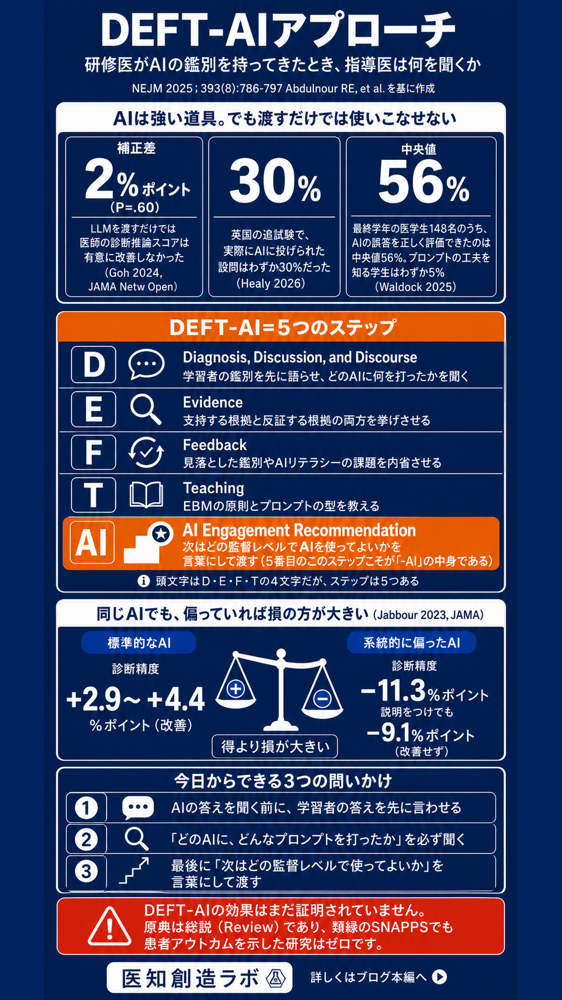

研修医がAIの鑑別を持ってきたとき、
指導医は何を聞くか
DEFT-AIアプローチの5ステップ
― 4段階ではなく5段階である理由
Abdulnour RE, Gin B, Boscardin CK. N Engl J Med. 2025;393(8):786-797 を基に作成
研修医が「ChatGPTに聞いたらこの鑑別が出ました」と言ってきたとき、指導医は何を返すべきか。 NEJM 2025 が提唱した DEFT-AI は、AIの使用を禁じる枠組みではなく、 使った瞬間を教育機会に変える問いかけの型です。 日本語の解説の多くは「4ステップ」と紹介しますが、原著の KEY POINTS は diagnosis, evidence, feedback, teaching, and recommendation for AI use と逐語で記しており、実際は5段階。 頭文字は D・E・F・T の4文字ですが、著者らが付け加えたのは5番目の AI Engagement Recommendation＝「この学習者は次にどの監督レベルでAIを使ってよいか」を言語化して手渡すステップです。

主な出典（いずれも PubMed 収載。著者・誌名・年・巻号・ページのメタデータ照合済み）
Abdulnour RE, et al. Educational Strategies for Clinical Supervision of Artificial Intelligence Use. N Engl J Med. 2025;393(8):786-797.
Savaria MC, et al. Enhancing the one-minute preceptor method for clinical teaching with a DEFT approach. Int J Infect Dis. 2022;115:149-153.
Neher JO, et al. A five-step "microskills" model of clinical teaching. J Am Board Fam Pract. 1992;5(4):419-24.
Goh E, et al. Large Language Model Influence on Diagnostic Reasoning: A Randomized Clinical Trial. JAMA Netw Open. 2024;7(10):e2440969.
Jabbour S, et al. Measuring the Impact of AI in the Diagnosis of Hospitalized Patients. JAMA. 2023;330(23):2275-2284.
Waldock WJ, et al. Which curriculum components do medical students find most helpful for evaluating AI outputs? BMC Med Educ. 2025;25:195.
本資料は医療従事者向けの教育・知識整理を目的とした情報提供であり、 特定の教育プログラムや診療行為の成果を保証するものではありません。